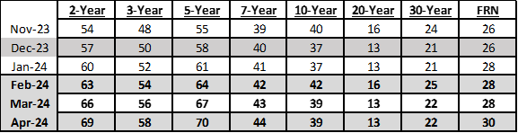

WASHINGTON — The U.S. Department of the Treasury is offering $121 billion of Treasury securities to refund approximately $105.1 billion of privately-held Treasury notes maturing on February 15, 2024. This issuance will raise new cash from private investors of approximately $15.9 billion. The securities are:
- A 3-year note in the amount of $54 billion, maturing February 15, 2027;
- A 10-year note in the amount of $42 billion, maturing February 15, 2034; and
- A 30-year bond in the amount of $25 billion, maturing February 15, 2054.
The 3-year note will be auctioned at 1:00 p.m. ET on Tuesday, February 6, 2024. The 10-year note will be auctioned at 1:00 p.m. ET on Wednesday, February 7, 2024. The 30-year bond will be auctioned at 1:00 p.m. ET on Thursday, February 8, 2024. All of these auctions will take place on a yield basis and will settle on Thursday, February 15, 2024.
The balance of Treasury financing requirements over the quarter will be met with regular weekly bill auctions, cash management bills (CMBs), and monthly note, bond, Treasury Inflation-Protected Securities (TIPS), and 2-year Floating Rate Note (FRN) auctions.
PROJECTED FINANCING NEEDS AND ISSUANCE PLANS
Since August 2023, Treasury has significantly increased issuance sizes for nominal coupon and FRN securities. Treasury intends to continue gradually increasing coupon auction sizes in the February to April 2024 quarter and believes that these cumulative changes will leave Treasury well positioned to address potential changes to the fiscal outlook and to the pace and duration of future SOMA redemptions.
NOMINAL COUPON AND FRN FINANCING
Based on current projected borrowing needs, Treasury does not anticipate needing to make any further increases in nominal coupon or FRN auction sizes, beyond those being announced today, for at least the next several quarters. Treasury plans to increase the auction sizes of the 2- and 5-year by $3 billion per month, the 3-year by $2 billion per month, and the 7-year by $1 billion per month. As a result, the auction sizes of the 2-, 3-, 5-, and 7-year will increase by $9 billion, $6 billion, $9 billion, and $3 billion, respectively, by the end of April 2024.
Treasury plans to increase both the new issue and the reopening auction size of the 10-year note by $2 billion and the 30-year bond by $1 billion. Treasury plans to maintain the 20-year bond new issue and reopening auction size.
Treasury plans to increase the February and March reopening auction size of the 2-year FRN by $2 billion and the April new issue auction size by $2 billion.
The table below presents, in billions of dollars, the actual auction sizes for the November 2023 to January 2024 quarter and the anticipated auction sizes for the February to April 2024 quarter:

Treasury plans to address any seasonal or unexpected variations in borrowing needs over the next quarter through changes in regular bill auction sizes and/or CMBs.
TIPS FINANCING
Given the intermediate- to long-term borrowing outlook and the structural balance of supply and demand for TIPS, Treasury believes it would be prudent to continue with incremental increases to TIPS auction sizes in order to maintain a stable share of TIPS as a percentage of total marketable debt outstanding. Over the February to April 2024 quarter, Treasury plans to maintain the February 30-year TIPS new issue auction size at $9 billion, increase the March 10-year TIPS reopening auction size by $1 billion to $16 billion, and increase the April 5-year TIPS new issue auction by $1 billion to $23 billion.
BILL ISSUANCE
Given current fiscal forecasts, Treasury expects to maintain bill auction sizes at current levels into late-March. Treasury anticipates that this will likely result in a $300-350 billion net increase to privately-held supply over the next two months. By late-March or early-April, Treasury anticipates modestly reducing short-dated bill auction sizes going into the tax filing season. These reductions will likely lead to a $100-150 billion net reduction to privately-held supply during the month of April. As always, Treasury will continue to evaluate near-term borrowing needs and assess additional adjustments to bill auction sizes as appropriate.
Treasury continues to actively evaluate whether to change the regular 6-week CMB to benchmark status and will announce its decision at an upcoming refunding. In the interim, Treasury will continue to supplement its benchmark bill financing with weekly issuance of the 6-week CMB, at least through the end of June 2024.
BUYBACKS
In preparation for the implementation of a regular buyback program later this year, Treasury anticipates conducting several small-value buyback operations in April with a limited population of securities to test processes and infrastructure. Details about these small-value buybacks will be released at a later date. Treasury intends to announce the date of the first regular buyback operation at the May refunding.
Please send comments or suggestions on these subjects or other subjects related to debt management to debt.management@treasury.gov.
The next quarterly refunding announcement will take place on Wednesday, May 1, 2024.
###